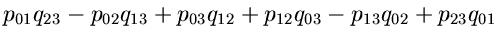

Equations
5
Suppose that we have a fixed line
m
with Plücker coordinates
Then the equation for a general line
l
to meet the fixed line
m
is
linear
in the Plücker coordinates

= 0
A sphere with center (
c
1
,
c
2
,
c
3
) and radius
r
is the zero locus of the quadratic form
Q
=
and the equation for a general line
l
to be tangent to the sphere is
quadratic
in its Plücker coordinates
= 0